场景选择
检查车辆健康状态
入车前车辆准备

轻松上下车

随身物品收纳
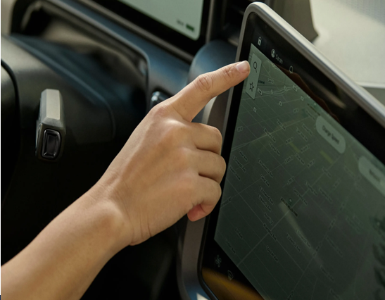
激活仪式

司机状态监测

偏好设置

接收订单

路线规划

订单管理

包装
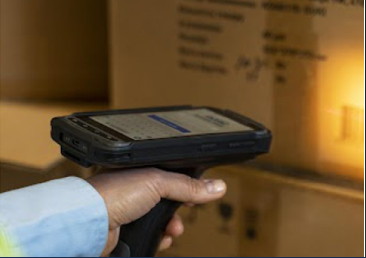
分拣

装车

安全检测

装载优化
库存同步

HMI交互

常规驾驶体验

途中沟通

后台实时支援

车-人-货-环境互联
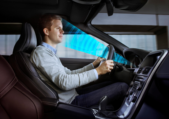
驾乘安全

ADAS辅助驾驶 (l0-l2)
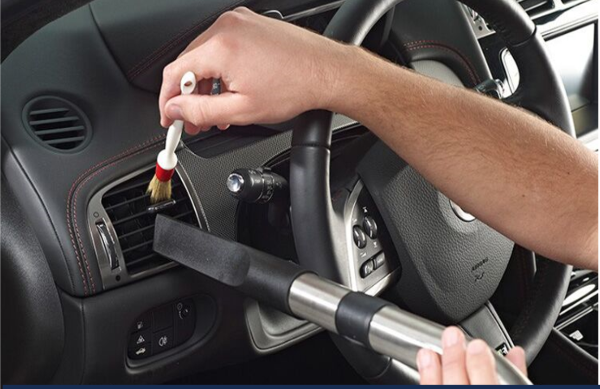
车内清洁
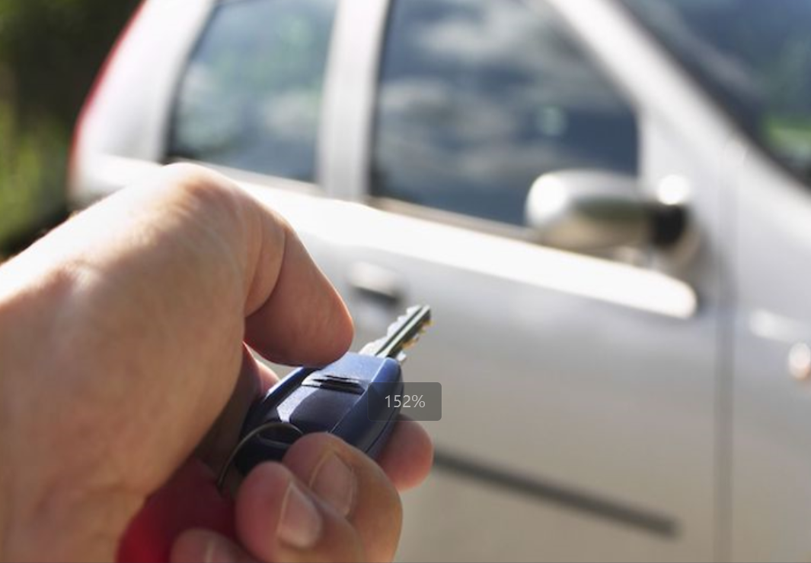
轻松离车
产品使用支持

自定义需求

生态服务
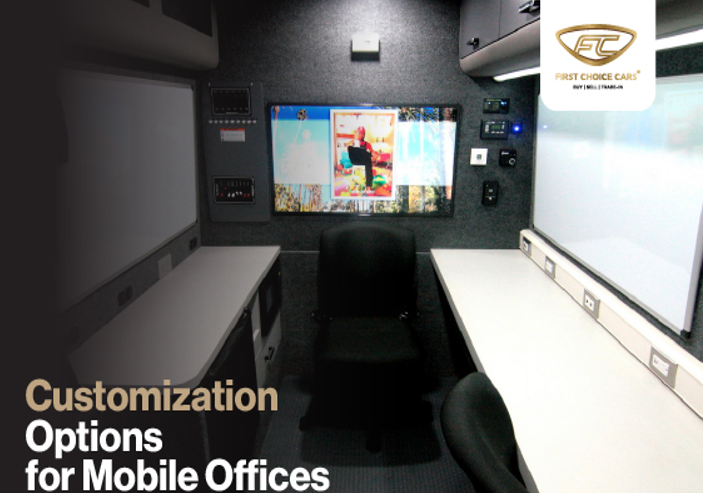
经济用能
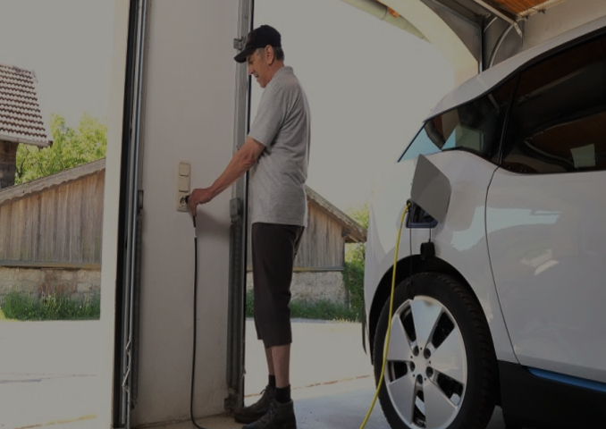
途中补能

能源管理

车队出行

停车
货物识别与分配

卸货

配送

配送信息同步更新
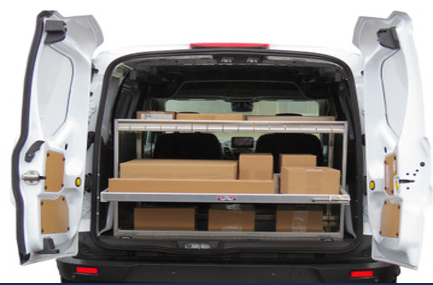
货舱整理

现场问题处理
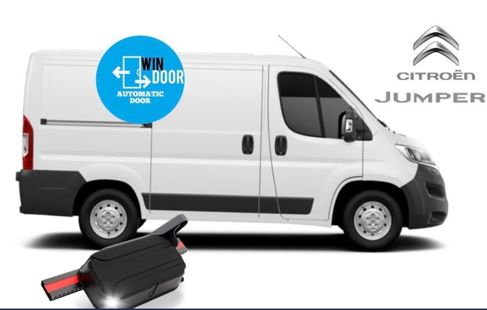
防盗防抢

配送后检查

量化计算ESG

虚拟社区互动

结束返程
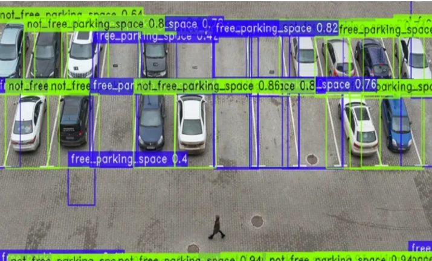
车辆入库
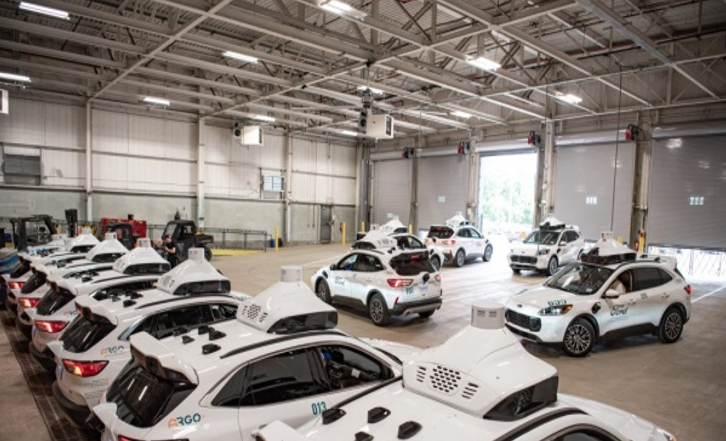
入库补能

车辆交接
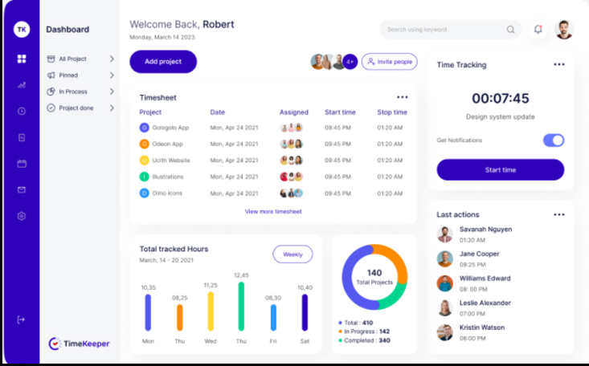
工作量评估

安全评估

工作日志

结束后检查

维保支持
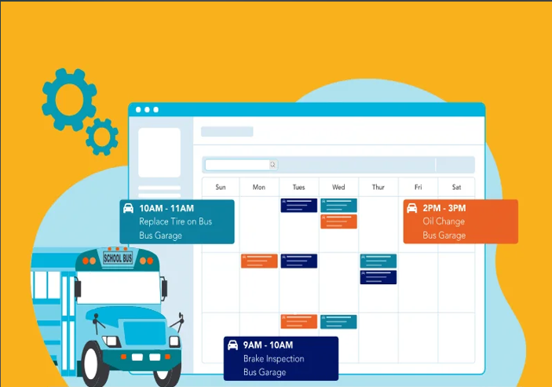
残值评估